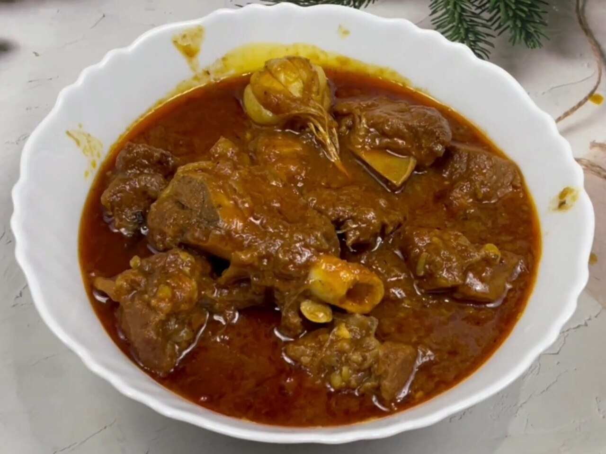

East India
Bihari Cuisine
A Gangetic plain cuisine built on roasted gram, mustard oil and live embers, feeding more people on less than almost any kitchen in India.
A Gangetic plain cuisine built on roasted gram, mustard oil and live embers, feeding more people on less than almost any kitchen in India.
If one ingredient explains Bihar, it is sattu: chana roasted whole and then stone-ground into a nutty, high-protein flour. It needs no cooking, keeps for weeks without refrigeration, and costs very little. That combination made it the everyday protein of a densely populated, largely agricultural state, and it turns up in almost every meal. Whisked into cold water with black salt, lemon and green chilli it becomes sattu sharbat, drunk by the glass through a Bihari summer. Spiked with garlic, ajwain and mustard oil it stuffs parathas and litti.
The rest of the pantry is the Gangetic plain's: wheat and rice, mustard oil pressed sharp, panch phoran for the tempering, and freshwater fish from the Ganga, Gandak and Kosi. Bihari cooking is not subtle in the way Awadhi cooking next door is subtle. It is direct, sour with lemon and amchur, hot with raw mustard oil and green chilli, and it leans on smoke and char rather than long-simmered gravies.
Litti is a ball of wheat dough packed with seasoned sattu and baked hard in the ashes of a cow-dung or coal fire, then cracked open and drowned in ghee. Chokha, its partner, is roasted brinjal, tomato and potato mashed with raw onion, mustard oil and lemon. The pairing is the state's best-known dish, and its logic is the logic of field food: it needs no pan, no stove and no gravy, it travels, and it keeps.
That ember-baked technique gave Bihar a reputation as poor food, which it has spent the last two decades shedding. Litti chokha now turns up in Patna restaurants and Delhi food halls, and the dish has become a marker of Bihari identity well beyond the state.
Bihar is not one food region. The south and centre — old Magadha, with Pataliputra at its heart, the seat of the Mauryan empire and the ground on which both Buddhism and Jainism took shape — leans vegetarian, wheat-heavy and austere. The north, across the Ganga, is Mithila: the Maithil Brahmin and Kayastha kitchens of Darbhanga and Madhubani, where fish is everyday food rather than an exception, and rice displaces wheat. A Maithil wedding feast and a Magadhi one look very different.
The northwest has its own claim. Champaran, on the Nepal border, gave India ahuna mutton — meat, mustard oil, garlic and whole spices sealed inside an earthen handi with dough and cooked slowly over its own steam, the pot broken open at the table. It is the one Bihari dish that is unapologetically rich.
Bihari sweets are unusually place-specific: each belongs to a named town and is judged against it. Silao, near Nalanda, makes khaja, a layered fried pastry soaked in syrup that carries a geographical indication tag. Gaya makes tilkut, sesame and jaggery pounded together by hand in winter workshops for Makar Sankranti. Maner makes laddus. Thekua, ridged wheat biscuits fried in ghee, are made for Chhath, the four-day festival of the sun god that is the most important date in the Bihari calendar and whose offerings are cooked under strict rules of purity.
The state's newest recognition is agricultural rather than culinary. Mithila Makhana — foxnut, popped from the seeds of a water lily grown in north Bihar's ponds — received a GI tag in 2022, and the crop has become one of the region's few genuine export successes.


Tell us what is in your kitchen, and Khaana will help you cook an authentic Indian meal.